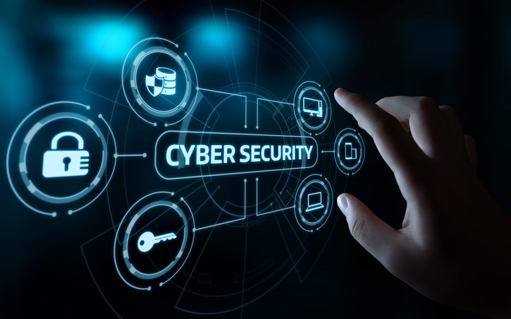

 Cybersecurity and privacy is a prominent domain in the IT world, it plays a role of a protector for the wide expanse and development of IT technologies. Cybercrime can even be a potential threat that terrorize nations.Therefore, cyber security is also thriving, and has its own state of the art in many aspects. In this context, the state of the art is about the greatest and latest development of technologies used in this domain. Cyber attacks are growing faster and faster, so many professionals have to come up with advanced solutions, and one of which is Artificial Intelligence (AI). Due to large enterprises and the development of Internet of Things, Cloud computing, and many more; they create a massive attack surface for cybercrime, and so there are billions of signals and data that need to be analyzed to measure the risk[1-Nhat-cybersecurity privacy]. With the advance of AI, this is a huge favor for cybersecurity when it helps them increase their security performance and reduce the breach risk. Not just the AI, there are more and more sophisticated technologies used to counter cyber attacks.
Moreover, there are such software like behavioral analytics used in cybersecurity in order to supervise suspicious activities. For example, Bioprinting, these markers can how the employees type or use the mouse to consider any possible dangerous behavior. Not just that, Man-in-the-Middle attacks (MiM) is also a challenge when hackers can secretly transfer or potentially interfere into the communications between two parties and control the conversation to steal information. Fortunately, with the amazing innovation of Virtual Dispersive Network (VDN), the issue can be solved by using this innovation to divide or split the message into numerous parts. Next, it encrypts the data and guides it to independent paths, so hackers have to waste more time to find what they are looking for.
As mentioned above, cybersecurity is in its state of the art with so many helpful innovations used against cybercrime. At the moment, there are more and more IT security companies and organizations which are the rising defense line in the world of IT. All of the methods above are among the available solutions to fight against cybercrime and protect privacy. To secure privacy, organizations have put more effort into investing in cybersecurity and spreading the common knowledge of how to protect privacy to many users. It is projected that there would be more to be done soon in the next 3 years in terms of laws and policies to help develop IT security.
It is conceivable that technologies are not enough to help protect user’s information and prevent cyber attacks; therefore, legislation and operations must be activated to counter cybercrimes. General Data Protection Regulation (GDPR) is known as the first set of laws that protect consumer privacy, and there will be more privacy laws activated worldwide which will cover 75% of the world’s population by 2023[2-Nhat-cybersecurity privacy]. In order to do this, authorities will have to be more dedicated to this field to make the most out of this issue when these cybercrimes tend to get worse from time to time if there are only limited actions. Inside the domain, changes also appear and the potential achievement for the next few years is AI, which will be a core component of all cybersecurity systems [3-Nhat-cybersecurity & privacy]. This technology has become common in recent years, and the productivity of which is so outstanding and far more better than a human. With full integration, cybersecurity developers can take the advantage of AI to detect potential risks and vulnerabilities, then fix the problems before someone exploits these issues. They can also use AI to create many simulations of cyber attacks to discover weak points which can be patched soon.
Prosperity and thriving developments of the IT world can not be denied, but there would be nothing without the presence of cybersecurity when black-hat hackers and cyber attacks can be a significant threat to all above. From the insider perspective, cybersecurity is and always will be the crucial role of protecting the world of IT. That is why with the growing developments in cybersecurity in terms of technology and legislation, changes appear positively. In the future of higher development in cybersecurity, a healthy environment of business and communication regarding IT World can be ensured. There will be more cyber attacks prevented and more businesses will be protected, knowledge and awareness regarding cybersecurity will become well-known as more laws are conducted which makes privacy more efficient when more people understand the seriousness of cybercrime.
Inside the industry, cybersecurity developers can increase their productivity in their attempts to block malicious activities with many advanced technologies. In addition, people that are involved in the IT World will be most affected. Individuals in various businesses will be relieved as the frequency of cyber attacks and data loss will likely reduce; hence, this will help them avoid economic and reputational loss. Users’ private information will be secured more than ever, more policies and technologies will have been developed to protect the people’s rights in the IT World. However, with all of this, we also have to expect more sophisticated techniques of cybercrime which is likely to be a potential threat used against new developments in cybersecurity. Cybersecurity’s developments are inevitable; therefore, more jobs will be created for the need of expanding the industry. The current jobs of Cybersecurity Specialist, Engineer, Analyst, and Architect will be in dire need even in the present. Along with this, there will be deeper and more diverse developments of the technologies used in cybersecurity (AI, behavioral analytics, zero trust model, VDN,etc.). Thus, jobs and technologies not only will not have any redundancy but also reach out and thrive in many ways.
Knowing that the area of cybersecurity and privacy has had such advances in technologies and laws, I feel excited and inspired. However, the field will continue to grow and expand in the future, which will absolutely bring a new wind to my daily life. My future path relates a lot to this particular domain, so its developments will do me a lot of favors. There will be so much more for me to learn in this field. Also, it will give me larger opportunities in my job decisions because there will be more technologies to study in cybersecurity. Moreover, I stay on the computer and the Internet a lot for studying and entertainment, so with a future of better cybersecurity, I will be safer with my private information on many websites that I registered. It will be an inspiration for me to learn more and immerse myself in this area because I see the importance in all of the new developments, which will help the IT World stay away from being exploited by cybercrime and black-hat hackers.
Since high school, some of my friends and I have been attracted by the growing reputation of fancy developments in the IT world, especially cybersecurity. They were so into it that most of them changed their major in college to IT in order to become a future cybersecurity specialist or engineer. Not just my friends, in my family, my father also sees the strength of having decent IT security, and he said to me that his company also hired a cybersecurity group for the company’s network, even though it is a construction company. On his workstation and other devices in my family, he installed and trusted the cybersecurity company's software to protect and secure the privacy. Therefore, more innovations in cybersecurity and privacy will certainly be good news to people around me and myself. Eventually, we will be able to head into a safer and healthier future of IoT, Metaverse, and many more with further evolution in cybersecurity and privacy.